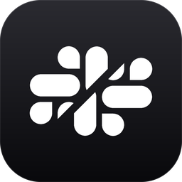

notslack
Slack, rebuilt natively. Every workspace, channel and thread, in 165 MB of memory instead of 1.16 GB.
We rewrite the apps you work in all day as native software. Pixel for pixel the same, with no browser inside.
For macOS, Linux and Windows. Open source.
Mission
The laptop on your desk is faster than any computer that existed fifteen years ago. The apps on it keep getting slower.
Chat takes seconds to open. Notes stutter while you type. Email wants a gigabyte of memory to show you a list of messages. None of that is what these programs need. It is what they cost when every desktop app is a website shipped inside its own copy of Chrome, and we have all quietly accepted it.
We think the software people live in deserves better. So we are rebuilding it, one app at a time, in Rust on GPUI, the framework behind the Zed editor. Every app looks and works exactly like the one you know and signs in to the account you already have. The only thing you should notice is that your computer feels fast again.

Slack, rebuilt natively. Every workspace, channel and thread, in 165 MB of memory instead of 1.16 GB.
Notion, rebuilt natively. Every page and database, in 258 MB of memory instead of 1.36 GB.
Superhuman, rebuilt natively. Every Gmail and JMAP inbox, in 71 MB of memory instead of 1.05 GB.
Terminal
On macOS and Linux, one command installs any app. Run it again to update.
Open source
Built in the open, and we want your help.
Everything is AGPL-licensed and lives on GitHub. Read the code, fix the pixel that is off, port it to your platform, or tell us which app should be next.
git clone https://github.com/nothq/notslack
cd notslack && cargo run --release